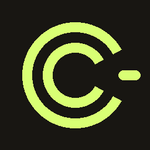

Um lugar para cada assunto
Separe projetos em espaços, mova e fixe abas e reabra as sessões salvas.

Orla. BaixarOrla é um navegador para Windows que reúne suas abas, referências e notas em espaços de trabalho.
Baixar para WindowsDemonstração interativa do navegador Orla
Demonstração interativa
Abra o que precisa agora e volte ao ponto em que parou quando mudar de projeto.
Separe projetos em espaços, mova e fixe abas e reabra as sessões salvas.
Compare fontes lado a lado. Ajuste o divisor e retome o par no mesmo espaço.
Salve trechos, links e notas. Depois, encontre suas capturas com Ctrl Shift K.
Crie espaços com cookies e logins próprios ou abra uma janela privada para uma visita pontual.
Experimente a prévia do Orla para Windows x64.
O download é um ZIP no GitHub. Entre na sua conta, extraia o arquivo e execute o instalador.
Ver compilaçõesA prévia é para Windows x64 e usa o Microsoft Edge WebView2 Runtime. O instalador pode baixar o runtime durante a instalação, caso ele ainda não esteja disponível.
Elas são salvas no dispositivo. Você pode exportar uma sessão em JSON com suas abas, notas e capturas e importar o arquivo em outra instalação.
Sim. Na prévia, use o painel de extensões para escolher a pasta de uma extensão descompactada. A compatibilidade depende do WebView2.